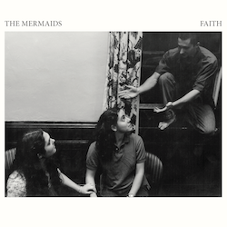

Produced by Chris Brown
Recorded by Chris Brown and Jake Bury at Rocky's Garage, Hotel Wolfe Island, and the Post Office, Wolfe Island, ON
Mixed by Chris Brown at the Post Office
Mastered by Michael Fossenkemper at Turtletone Studios, New York, NY
Contributions from Chris Brown, Jason Mercer, Liam Cole, Pete Bowers, Joey Wright, James "JT" Taylor, Sarah McDermott, Jake Bury and Rocky Roberts.
Produced by Chris Brown
Recorded by Chris Brown at The Green Door (Brooklyn, NY), Experience Music (Tarrytown, NY) and The Post Office (Wolfe Island, ON)
Mixed by Chris Brown at The Post Office
Mastered by Michael Fossenkemper at Turtletone Studios (New York, NY)
Contributions from Chris Brown, Cam Giroux and Elijah Abrams
Produced by Chris Brown
Recorded by Chris Brown at Jersey Rock Attack (Brooklyn, NY), The Green Door (Brooklyn, NY), and The Post Office (Wolfe Island, ON) and by Aaron Holmberg at The Bath House (Bath, ON)
Mixed by Chris Brown at The Post Office
Mastered by Michael Fossenkemper at Turtletone Studios (New York, NY)
Contributions from Chris Brown, Kate Fenner, Cam Giroux, Anton Fier, Tony Scherr, Jason Mercer, Elijah Abrams, Dan Curtis, Burke Carroll, Andrew Whiteman, John Abrams, Cohen Sansom, James Abrams, Cocheme'a Gastelum, Alvin Arnold and Russ Davis
Produced by Chris Brown and Lurch
Recorded, mixed and mastered by Lurch at Broadcast Lane Studios/The Cathouse (Brooklyn, NY)
Contributions from Chris Brown, Mike Mazor, Tony Scherr, Jason Mercer, Melwood Cutlery, Carolyn Mark and Tolan McNeil